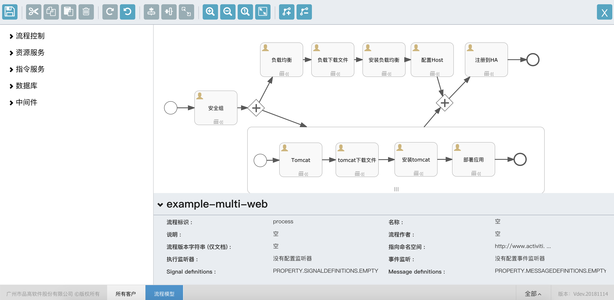
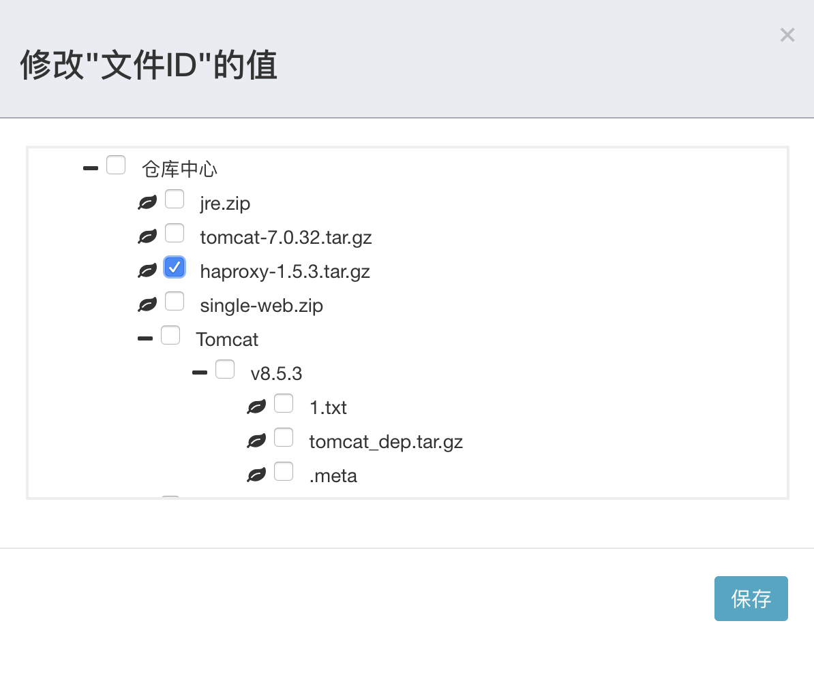

制作多机架构的web应用
web集群由负载均衡和多台tomcat组成，构成一主多从的架构
创建应用，版本，创建方案等请参考第2节使用指引，本章将介绍如何具体设计一个多机架构的web流程模型
安装包准备和上传
tomcat安装包下载地址：http://sip.bingosoft.net:8081/upload/app/tomcat-7.0.32.tar.gz
jre安装包下载地址：http://sip.bingosoft.net:8081/upload/app/jre.zip
web程序包下载地址：http://sip.bingosoft.net:8081/upload/app/double-web.zip
haproxy程序包下载地址：http://sip.bingosoft.net:8081/upload/app/haproxy-1.5.3.tar.gz
- 在配置管理->高级服务->文件管理->临时文件管理中上传已经下载的安装包
- 在临时文件中，分别选中这三个安装包，右键或更多操作，选中注册。
- 在仓库文件中，查看已经上传的三个安装包
如果您的环境可以连接下载地址，也可以直接使用wget 下载这个链接到虚拟机中
已经上传并注册过的文件，不需要重复上传。
设计方案
打开方案，进入设计器界面，按照下图所示，依次从流程控制中拖拽开始事件，结束事件；从资源服务中拖拽安全组，实例，从指令服务中拖拽防火墙端口，文件，组件和自定义指令。 有所不同的是，多机部署需要借助子流程的多实例，从流程控制中拖拽子流程，将tomcat的部署过程拖拽到子流程中。

编辑安全组
开放端口：
tcp:8080编辑实例
- 实例名称为Haproxy,节点的编号为
createHa,名称为负载均衡 - 实例名称为Tomcat,节点的编号为
createTomcat,名称为Tomcat
- 实例名称为Haproxy,节点的编号为
编辑文件
- 实例ID为
${outputs.createHa.instanceId}，文件ID选择已上传并注册的ha安装包

- 实例ID为
${outputs.createTomcat.instanceId}，文件ID选择已上传并注册的ha安装包
- 实例ID为
编辑组件
- 实例ID为
${outputs.createHa.instanceId},维护组件的名称，日志目录，安装路径等
安装脚本：
#!/bin/bash # yum -y install haproxy tar xvzf helloworld/haproxy-1.5.3.tar.gz -C /usr/local/src cd /usr/local/src/haproxy-1.5.3 make TARGET=linux26 make install mkdir -p /var/run/haproxy cp examples/haproxy.init /etc/init.d/haproxy chmod 755 /etc/init.d/haproxy groupadd haproxy useradd -s /sbin/nologin haproxy -g haproxy mkdir -p /etc/haproxy cp -p examples/haproxy.cfg /etc/haproxy/. cat << EOF > /etc/haproxy/haproxy.cfg #--------------------------------------------------------------------- # Example configuration for a possible web application. See the # full configuration options online. # # http://haproxy.1wt.eu/download/1.4/doc/configuration.txt # #--------------------------------------------------------------------- #--------------------------------------------------------------------- # Global settings #--------------------------------------------------------------------- global # to have these messages end up in /var/log/haproxy.log you will # need to: # # 1) configure syslog to accept network log events. This is done # by adding the '-r' option to the SYSLOGD_OPTIONS in # /etc/sysconfig/syslog # # 2) configure local2 events to go to the /var/log/haproxy.log # file. A line like the following can be added to # /etc/sysconfig/syslog # # local2.* /var/log/haproxy.log # log 127.0.0.1 local2 chroot /var/lib/haproxy pidfile /var/run/haproxy.pid maxconn 4000 user haproxy group haproxy daemon # turn on stats unix socket stats socket /var/lib/haproxy/stats #--------------------------------------------------------------------- # common defaults that all the 'listen' and 'backend' sections will # use if not designated in their block #--------------------------------------------------------------------- defaults mode http log global option httplog option dontlognull option http-server-close option forwardfor except 127.0.0.0/8 option redispatch retries 3 timeout http-request 10s timeout queue 1m timeout connect 10s timeout client 1m timeout server 1m timeout http-keep-alive 10s timeout check 10s maxconn 3000 #--------------------------------------------------------------------- # main frontend which proxys to the backends #--------------------------------------------------------------------- frontend main *:80 acl url_static path_beg -i /static /images /javascript /stylesheets acl url_static path_end -i .jpg .gif .png .css .js use_backend static if url_static default_backend app #--------------------------------------------------------------------- # static backend for serving up images, stylesheets and such #--------------------------------------------------------------------- backend static balance roundrobin server static 127.0.0.1:4331 check #--------------------------------------------------------------------- # round robin balancing between the various backends #--------------------------------------------------------------------- backend app balance roundrobin server app1 127.0.0.1:5001 check server app2 127.0.0.1:5002 check server app3 127.0.0.1:5003 check server app4 127.0.0.1:5004 check EOF2. 实例ID为
${outputs.createTomcat.instanceId},维护组件的名称，日志目录，安装路径等安装脚本：
#! /bin/sh echo install jdk cd /tmp unzip -q jre.zip -d /usr/local/java/ echo "JAVA_HOME=/usr/local/java" >> /etc/profile echo "JRE_HOME=/usr/local/java/jre" >> /etc/profile echo "PATH=\$PATH:\$JRE_HOME/bin" >> /etc/profile echo "export PATH" >> /etc/profile source /etc/profile echo install tomcat mkdir -p /apps/svr/tomcat7 tar zxf tomcat-7.0.32.tar.gz -C /apps/svr/tomcat7/ ln -s /apps/svr/tomcat7/bin/catalina.sh /etc/init.d/tomcat sed -i "102a JRE_HOME=/usr/local/java/jre" /apps/svr/tomcat7/bin/catalina.sh echo "service tomcat start">>/etc/rc.local- 实例ID为
设置Host
编辑Host的实例ID为：
${outputs.createHa.instanceId}，表示会在HA上配置所有机器的host编辑自定义指令
实例ID为
${outputs.createTomcat.instanceId}
指令内容:
#! /bin/sh unzip signle-web.zip -d /apps/svr/tomcat7/webapps service tomcat start注册到HA 实例ID为：
${outputs.createHa.instanceId}指令内容:#! /bin/sh cat << EOF > config_ha.py #!/usr/bin/python hosts = open('/etc/hosts', 'r') haconf = open('/etc/haproxy/haproxy.cfg', 'r+') lines = haconf.readlines() for idx, line in enumerate(lines): if line.strip() == 'backend app': lines[idx + 2:] = [] break haconf.seek(0) haconf.writelines(lines) haconf.close() haconf = open('/etc/haproxy/haproxy.cfg', 'a') m, n = None, None for line in hosts.readlines(): if line.strip() == '###BINGOSOFT ENV HOST START###': m = [] elif line.strip() == '###BINGOSOFT ENV HOST END###': n = m elif m is not None and n is None: m.append(line) for host in n: h = host.strip().split() if h[1].startswith('Tomcat'): haconf.write('\tserver ' + h[1] + ' ' + h[0] + ':8080 check\n') haconf.close() hosts.close() EOF python config_ha.py mkdir /var/lib/haproxy /usr/local/sbin/haproxy -f /etc/haproxy/haproxy.cfg
设计完成，点击保存即可。